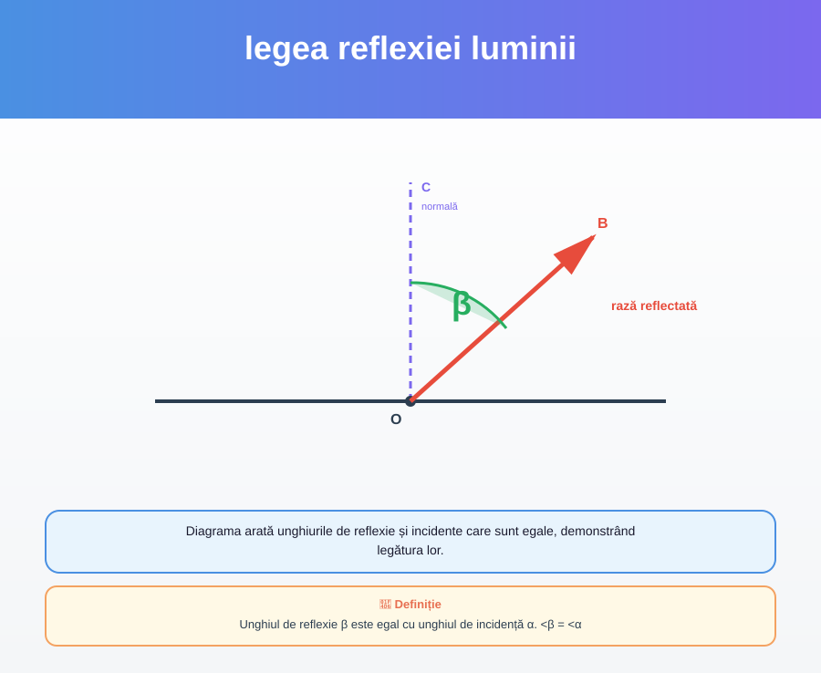
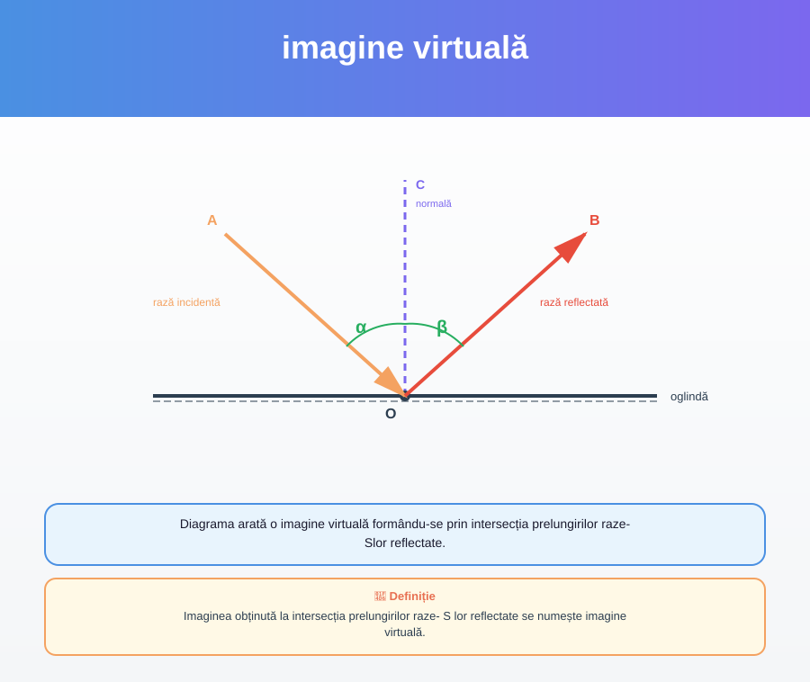

Unghiul de reflexie β este egal cu unghiul de incidență α. <β = <α
Diagrama arată unghiurile de reflexie și incidente care sunt egale, demonstrând legătura lor.
p. 8
Imaginea obținută la intersecția prelungirilor raze- S lor reflectate se numește imagine virtuală.
Diagrama arată o imagine virtuală formându-se prin intersecția prelungirilor raze- Slor reflectate.
p. 10